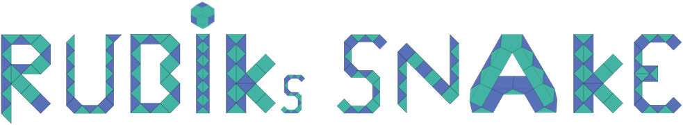

Welcome to the RUBIK's SNAKE Fansite!
RUBIK's SNAKE is an ultimate toy - nobody wants to put it aside. Once started you can generate a tremendous amount of different figures and shapes.
If you don't know Rubik's Snake have a look at the official site from RUBIK's (sometimes also named as RUBIK's TWIST).
RUBIK's SNAKEOn our fansite you find a lot of figures and shapes which are sorted in several categories. We created a notation in order to describe the twists to get each figure or shape as individual.
When you click or tap on each unique pictures you get the figure or shape in a new 3D-Viewer box in which you can rotate it in every angle.
We like to share the joy of RUBIK's SNAKE with fans and friends all over the world. If you like you can send us your new figures or shapes, either in our notation or as picture.
th...@wo...deIn addition you can use the integrated "Player". So you are able to test and see if the notation is correct.